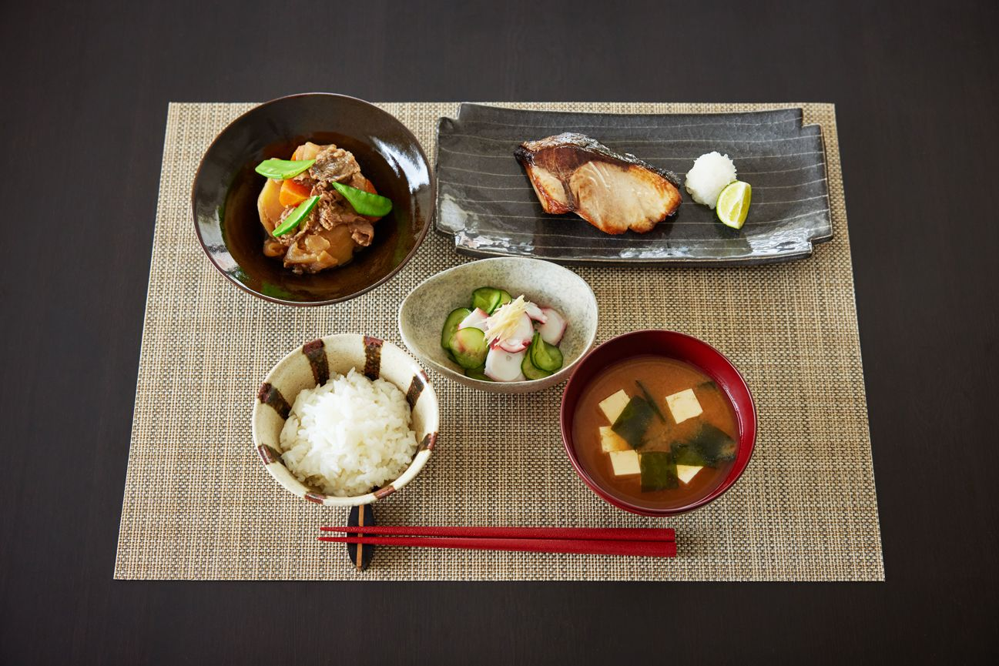

Bienvenue sur ce site web qui vous ferra part du japon. Activité touristique, culture, prix de la vie, société et attente versus réalité seront des sujets qui seront abordés sur ce site. Voici un avant goût de ce qui vous attend lors de votre navigation.
L'alimentation japonaise est bien différent de la notre.L'image ci-dessus n'est nul autre qu'un déjeuner typique japonais bien différent du déjeuner Canadien contenant généralement des toasts beurrées, des crêpes ou autre. Contrairement à nous, le déjeuner japonais ressemble à un ensemble de plusieurs petit plat différent qui contient en général du riz, du poisson ou bien du miso.
Peut être que cette alimentation peut suciter des questionnements chez certains.Pourquoi cette tendance pour des plats différents de ceux de l'occident? Préparer tous ces plats ne leur prend t-il pas trop de temps?
D'où viens leur préférence pour certains aliments, mais surtout ce déjeuner est il avantageux financièrement et combien cela coute t-il en moyenne par portion? Ce sont des questions qui seront répondu dans l'onglet «Liens et documentation» où vous pourrez aussi retrouver des informations globals sur l'alimentation complète des japonais.
Vous retrouverez ensuite des informations sur la culture japonaise, par exemple pourquoi dit on que les japonais sont respectueux et bienveillant et pourquoi faut-il absolument enlever ses chaussures avant d'entré dans la maison? Il y a une raison derrière cela et elle fait parti des normes social du japon. Vous pourrez donc lire ces différentes informations dans l'onglet liens et documentation, mais vous aurez aussi accès à un fichier audio d'un émission de radio abordant le sujet du japon, ainsi que deux vidéo sur différent sujet dont l'une portera sur le honne puis le tatamae et l'autre sur les superstitions japonaise
Vous pourrez aussi observer un diaporamma contenant diverse image de lieux touristiques. Si il vous vient l'envie de consulter l'un des lieux, les noms des endroits ou structures seront écrit directement lorsque que vous déposerez votre souris sur l'image toutefois il n'y aura pas de documentations sur tous les lieux.
Vous pouvez toutefois consulter d'autre document sur le sujet ou bien les source que je metterai à la fin du document.
Il y aura aussi un calendrier mis à votre disposition afin de pouvoir consulter nos principal fête ainsi que nos journées fériés pour que vous puissez peut être réfléchir à des vacances dans le pays du soleil levant.
Dans le tout dernier onglet de ce site web vous pourrez consulter le liens vers mon répertoire Gethub, les sources utilisé dans le site web et quelque information sur moi la création de ce site web.
J'espère que ce site web vous plaira bien qu'il soit un peu amateur, sur ce bonne lecture.